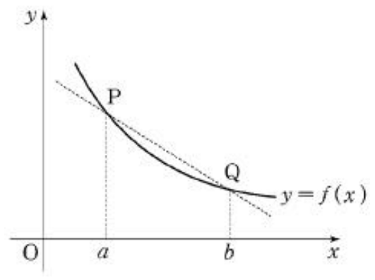

- \(1\)
- \(\sqrt{3}\)
- \(3\)
- \(3\sqrt{3}\)
- \(9\)
Mathematics (Type Ga)

Let \(\theta\) be the angle between plane \(\mathrm{PQR}\) and plane \(\mathrm{CGHD}\). What is the value of \(\cos\theta\)? (※ \(0<\theta<\dfrac{\pi}{2}\)) [3 points]
- \(\dfrac{\sqrt{10}}{5}\)
- \(\dfrac{\sqrt{10}}{10}\)
- \(\dfrac{\sqrt{11}}{11}\)
- \(\dfrac{2\sqrt{11}}{11}\)
- \(\dfrac{3\sqrt{11}}{11}\)

Given that a function \(F(x)\) satisfies \(F'(x)=f(x)\),
which option contains every correct statement in the <List>?
[4 points]
- Function \(F(x)\) increases on the interval \([a,b]\).
- \(\dfrac{F(b)-F(a)}{b-a}\) is equal to the slope of line \(\mathrm{PQ}\).
- \(\displaystyle\int_a^b\{f(x)-f(b)\}dx\leq\frac{(b-a)\{f(a)-f(b)\}}{2}\)
- a
- b
- a, c
- b, c
- a, b, c
- \(\dfrac{1}{3}\)
- \(\dfrac{1}{2}\)
- \(\dfrac{3}{5}\)
- \(\dfrac{2}{3}\)
- \(\dfrac{3}{4}\)